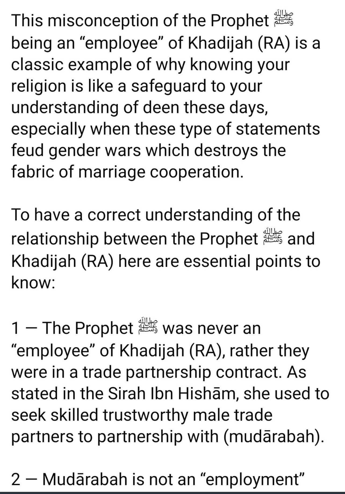

Evidence From Quranic Verses That Clearly Go Against Feminism
1.)
“Divorced women remain in waiting for three periods, and it is not lawful for them to conceal what Allah has created in their wombs if they believe in Allah and the Last Day. And their husbands have more right to take them back in this [period] if they want reconciliation. And due to the wives is similar to what is expected of them, according to what is reasonable. But the men have a degree over them [in responsibility and authority]. And Allah is Exalted in Might and Wise.”
(Quran 2:228)
2.)
“O you who have believed, when you contract a debt for a specified term, write it down. And let a scribe write [it] between you in justice. Let no scribe refuse to write as Allah has taught him. So let him write and let the one who has the obligation dictate. And let him fear Allah , his Lord, and not leave anything out of it. But if the one who has the obligation is of limited understanding or weak or unable to dictate himself, then let his guardian dictate in justice. And bring to witness two witnesses from among your men. And if there are not two men [available], then a man and two women from those whom you accept as witnesses - so that if one of the women errs, then the other can remind her. And let not the witnesses refuse when they are called upon. And do not be [too] weary to write it, whether it is small or large, for its [specified] term. That is more just in the sight of Allah and stronger as evidence and more likely to prevent doubt between you, except when it is an immediate transaction which you conduct among yourselves. For [then] there is no blame upon you if you do not write it. And take witnesses when you conclude a contract. Let no scribe be harmed or any witness. For if you do so, indeed, it is [grave] disobedience in you. And fear Allah . And Allah teaches you. And Allah is Knowing of all things.”
(Quran 2:282)
——
3.)
“And if you fear that you will not deal justly with the orphan girls, then marry those that please you of [other] women, two or three or four. But if you fear that you will not be just, then [marry only] one or those your right hand possesses. That is more suitable that you may not incline [to injustice].”
(Quran 4:3)
4.)
”Allah instructs you concerning your children: for the male, what is equal to the share of two females. But if there are [only] daughters, two or more, for them is two thirds of one's estate. And if there is only one, for her is half. And for one's parents, to each one of them is a sixth of his estate if he left children. But if he had no children and the parents [alone] inherit from him, then for his mother is one third. And if he had brothers [or sisters], for his mother is a sixth, after any bequest he [may have] made or debt. Your parents or your children - you know not which of them are nearest to you in benefit. [These shares are] an obligation [imposed] by Allah . Indeed, Allah is ever Knowing and Wise.”
(Quran 4:11)
5.)
”Men are in charge of women by [right of] what Allah has given one over the other and what they spend [for maintenance] from their wealth. So righteous women are devoutly obedient, guarding in [the husband's] absence what Allah would have them guard. But those [wives] from whom you fear arrogance - [first] advise them; [then if they persist], forsake them in bed; and [finally], strike them. But if they obey you [once more], seek no means against them. Indeed, Allah is ever Exalted and Grand.”
(Quran 4:34)
——
6.)
“They request from you a [legal] ruling. Say, " Allah gives you a ruling concerning one having neither descendants nor ascendants [as heirs]." If a man dies, leaving no child but [only] a sister, she will have half of what he left. And he inherits from her if she [dies and] has no child. But if there are two sisters [or more], they will have two-thirds of what he left. If there are both brothers and sisters, the male will have the share of two females. Allah makes clear to you [His law], lest you go astray. And Allah is Knowing of all things.”
(Quran 4:176)
7.)
“This day [all] good foods have been made lawful, and the food of those who were given the Scripture is lawful for you and your food is lawful for them. And [lawful in marriage are] chaste women from among the believers and chaste women from among those who were given the Scripture before you, when you have given them their due compensation, desiring chastity, not unlawful sexual intercourse or taking [secret] lovers. And whoever denies the faith - his work has become worthless, and he, in the Hereafter, will be among the losers.”
(Quran 5:5)
——
8.)
“Tell the believing men to reduce [some] of their vision and guard their private parts. That is purer for them. Indeed, Allah is Acquainted with what they do. And tell the believing women to reduce [some] of their vision and guard their private parts and not expose their adornment except that which [necessarily] appears thereof and to wrap [a portion of] their headcovers over their chests and not expose their adornment except to their husbands, their fathers, their husbands' fathers, their sons, their husbands' sons, their brothers, their brothers' sons, their sisters' sons, their women, that which their right hands possess, or those male attendants having no physical desire, or children who are not yet aware of the private aspects of women. And let them not stamp their feet to make known what they conceal of their adornment. And turn to Allah in repentance, all of you, O believers, that you might succeed.”
(Quran 24:30-31)
9.)
“O wives of the Prophet, you are not like anyone among women. If you fear Allah , then do not be soft in speech [to men], lest he in whose heart is disease should covet, but speak with appropriate speech. And abide in your houses and do not display yourselves as [was] the display of the former times of ignorance. And establish prayer and give zakah and obey Allah and His Messenger. Allah intends only to remove from you the impurity [of sin], O people of the [Prophet's] household, and to purify you with [extensive] purification.”
(Quran 33:32-33)
10.)
“O Prophet, tell your wives and your daughters and the women of the believers to bring down over themselves [part] of their outer garments. That is more suitable that they will be known and not be abused. And ever is Allah Forgiving and Merciful.”
(Quran 33:59)
Evidence From Ahadith and the Ulema That Clearly Go Against Feminism
1.)
It was narrated that:
“Abdullah bin Abu Awfa said “When Muadh bin Jabal came from Sham, he prostrated to the Prophet (ﷺ) who said: 'What is this, O Muadh?' He said: 'I went to Sham and saw them prostrating to their bishops and patricians and I wanted to do that for you.' The messenger of Allah said: 'Do not do that. If I were to command anyone to prostrate to anyone other than Allah, I would have commanded women to prostrate to their husbands. By the One in Whose Hand is the soul of Muhammad! No woman can fulfill her duty towards Allah until she fulfills her duty towards her husband. If he asks her (for intimacy) even if she is on her camel saddle, she should not refuse.' ”
Source: Sunan Ibn Majah 1853
2.)
It was narrated that from Musawir Al Himyari from his mother that:
“she heard Umm Salamah say: “I heard the Messenger of Allah say: 'Any woman who dies when her husband is pleased with her, will enter Paradise.' ”
Source: Sunan Ibn Majah, 1854
3.)
Usamah ibn Zayd reported:
“The Prophet, peace and blessings be upon him, said, “I have not left a trial after me more harmful to men than women.”
Source: Sahih al-Bukhari 4808, and Sahih Muslim 2740
4.)
Narrated Abu Bakra:
“During the battle of Al-Jamal, Allah benefited me with a Word (I heard from the Prophet). When the Prophet heard the news that the people of the Persia had made the daughter of Khosrau their Queen (ruler), he said, "Never will succeed such a nation as makes a woman their ruler."
Source: Sahih al-Bukhari 7099
5.)
Jabir reported that Allah's Messenger (ﷺ) saw a woman, and so he came to his wife, Zainab, as she was tanning a leather and had sexual intercourse with her. He then went to his Companions and told them:
“The woman advances and retires in the shape of a devil, so when one of you sees a woman, he should come to his wife, for that will repel what he feels in his heart.”
Source: Sahih Muslim 1403 a
6.)
Narrated Abu Huraira:
“Allah's Messenger (ﷺ) said, "If a husband calls his wife to his bed (i.e. to have sexual relation) and she refuses and causes him to sleep in anger, the angels will curse her till morning."
Source: Sahih al-Bukhari 3237
7.)
Narrated Ibn Umar:
“The Prophet (ﷺ) said, "A woman should not travel for more than three days except with a Dhi-Mahram (i.e. a male with whom she cannot marry at all, e.g. her brother, father, grandfather, etc.) or her own husband.)"
Source: Sahih al-Bukhari, 1086
8.)
Narrated Ibn Umar:
The Prophet (ﷺ) said, "A woman should not travel for more than three days except with a Dhi-Mahram."
Source: Sahih al-Bukhari, 1087
9.)
Ibn Umar (Allah be pleased with them) reported Allah's Messenger (ﷺ) as saying:
A woman should not set out on three (days' journey) except when she has a Mahram with her.
Source: Sahih Muslim, 1338 a
10.)
Abu Sa'id Khudri (Allah be pleased with him) reported Allah's Messenger (ﷺ) as saying:
A woman should not set out on a journey extending beyond three nights but with a Mahram.
Source: Sahih Muslim, 827 g
——-
11.)
Abu Sa’eed Al-Khudri narrated that The Messenger of Allah said:
“It is not lawful for a woman who believers in Allah and the Last Day to travel on a trip that is three days or more, unless she is accompanied by her father, her brother, her husband, her son, or someone who is a Mahram to her.”
Source: Jami at-Tirmidhi, 1169
12.)
Ibn Umr reported the Prophet (SWAS) as saying :
“A woman must not make a journey of three days unless she is accompanied by a man who is within the prohibited degree.”
Source: Sunan Abi Dawud, 1727
13.)
It was narrated from Abu Sa’eed that the Messenger of Allah (ﷺ) said:
“No woman should travel the distance of three days or more, unless she is with her father, brother, son, husband or a Mahram.”
Source: Sunan Ibn Majah, 2898
14.)
In a treatise of the Hanafi legal school by Imam `Ala’ al-Din al-Haskafi (may Allah have mercy upon him), we read:
“It is reprehensible (makruh) for a woman to address her husband by his name.”
Source: al-Durr al-Mukhtar fi Sharh Tanwir al-Absar
——
15.)
We read in the renowned commentary by Imam Ibn Abidin (may Allah have mercy upon him):
“It is necessary [for the wife] to use forms of address which convey reverence such as ‘my master’ (sayyidi) and similar to that…”
Source: Radd al-Muhtar ala ‘l-Dur al-Mukhtar
He then proceeds to cite supportive evidence (with weakness in its chain):
👇
“The wife of Said ibn al-Musayyib said: ‘We (i.e. the womenfolk of the Sahabah) used to address our husbands as we addressed our rulers: may Allah rectify your affairs, may Allah give you good health.’”
16.)
Umm al-Darda’ (may Allah be pleased with her) used to say the following words whenever she narrated a hadith from her husband Abu ‘l-Darda’ (may Allah be pleased with him):
“My master (sayyidi) narrated to me…”
Imam al-Nawawi (may Allah be pleased with him) says in his commentary (sharh) on the Sahih of Imam Muslim:
“Umm al-Darda’ narrated to me; she said: ‘my master narrated to me…’
Here she is referring to her husband Abu ‘l-Darda’ and from this, it can be deduced that it is permissible for a wife to address her husband as sayyidi (my master).”
——
17.)
Narrated Abu Hurairah:
“It was narrated that Abu Hurairah said: "It was said to the Messenger of Allah: 'Which woman is best?' He said: 'The one who makes him happy when he looks at her, obeys him when he commands her, and she does not go against his wishes with regard to herself nor her wealth.'"
Source: Sunan an-Nasa'i 3231
18.)
“Woman is ‘awrah, and when she goes out the Shaytaan gets his hopes up. She is never closer to Allaah than when she is in the innermost part of her house.”
(Narrated by Ibn Hibbaan and Ibn Khuzaymah; classed as saheeh by al-Albaani in al-Silsilah al-Saheehah, no. 2688.
19.)
The Prophet (peace and blessings of Allaah be upon him) said concerning women praying in the mosques: “Their houses are better for them.”
(Narrated by Abu Dawood, 567’ classed as saheeh by al-Albaani in Saheeh Abi Dawood).
20.)
Abdullah ibn Umar reported: The Messenger of Allah, peace and blessings be upon him, said,
“Every one of you is a shepherd and is responsible for his flock. The leader of people is a guardian and is responsible for his subjects. A man is the guardian of his family and he is responsible for them. A woman is the guardian of her husband’s home and his children and she is responsible for them. The servant of a man is a guardian of the property of his master and he is responsible for it. No doubt, every one of you is a shepherd and is responsible for his flock.”
Source: Ṣaḥīḥ al-Bukhārī 7138, Ṣaḥīḥ Muslim 1829
”Muslim†Feminists Would Have Hated Imam Al Ghazali If He Was Alive Today
Source: Ihya Ulum al-Din
Imam Al-Ghazali here is explaining why you should prefer to marry virgins instead of women with more experience.
Men's nature is to be repulsed by women who have been touched by other men.
“Woman’s behavior depends on the tone you set. If you loosen her reins a little, she'll defy you for a long time. If you loosen her restraint an inch, she'll drag you for a foot. But if you curb her and use a strong hand against her when firmness is called for, you’ll control her.”
Source: Book of Marriage Etiquette
It is the second book of a quarter of habits from the book of Revival of Religious Sciences
How Wives Back Then Treated Their Husbands
What Umar ibn Al Khattab would think of today’s women
Umar ibn al-Khattab said:
"The foulest of women is the Salfa'."
Salfa' is the immodest woman who mixes with men and is not shy from them.
(Ibn Abi Shaybah 32503)
Immodesty in Liberal Muslim Women
When Feminist Muslims Say “The money of the husband belongs to the wife.”
The opposite is actually the case. Not what the Feminist Muslims are pushing.
👇
Abu Ummah said:
"During the year of the Farewell Pilgrimage, I heard the Messenger of Allah (S.A.W) saying in the Khutbah: 'Indeed Allah, Most Blessed and Most High, has given the right due to everyone deserving a right. So there is no will for an heir, the child is for the bed, and for the fornicator is the stone, and their reckoning is for Allah, Most High. And whoever claims someone other than his father, or an affiliation with other than his Mawali, then upon him is the continued curse of Allah until the Day of Judgment. The wife is not to spend from her husband's house except with her husband's permission.' They said: 'O Messenger of Allah! Not even food?' He said: 'That is the most virtuous of our wealth.' And he said: 'The borrowed is to be returned, the endowment is to be refunded and the debt is to be repaid, and the guarantor is responsible.'"
Source: Jami` at-Tirmidhi 2120
——
Hypocrisy of Muslim Feminists who use Khadijah ra and Aisha ra as their defense
Muslim feminists: "Khadijah was an empowered female CEO! Aisha was a tenured university professor and teacher of men! We have to follow the example of the Mothers of the Believers!"
Also Muslim feminists: "Omg, what do you mean, Muslim women are better off staying home? Oh, that ayah👇
“Settle in your homes, and do not display yourselves as women did in the days of ˹pre-Islamic˺ ignorance. Establish prayer, pay alms-tax, and obey Allah and His Messenger. Allah only intends to keep ˹the causes of˺ evil away from you and purify you completely, O members of the ˹Prophet’s˺ family!”
(Quran 33:33)
Those same Muslim feminists: “No, we don't have to follow that command. That doesn't apply to us; that only applies to the Mothers of the Believers!"
Feminist Logic:
✅ Khadija [RA] was a business woman
❌ Khadija obeyed her husband
❌ She took care of her husband and her house
❌ She covered completely from head to toe
❌ She stayed away from men
❌ She didn’t go around the market with makeup, perfume or heels
—-
Addressing Misconceptions Regarding Khadijah ra

Muslim Feminists Would Have Hated Sheikh Al Bani If He Were Alive Today
Sheikh Al Bani said that Muslim women should not attend the secular universities.
https://thewayofsalafiyyah.com/2015/06/17/the-advice-of-shaykh-al-albaanee-to-women-who-act-like-men/
What Muhammad peace be upon him said about abortion
Ibn Mas’ud said, “O Messenger of Allah, what is the greatest sin?” The Prophet ﷺ said, “To set up a partner alongside Allah, although He alone created you.” He said, “What is next?” The Prophet said, “To kill your child, fearing he will eat with you.”
‎—Ṣaḥīḥ al-Bukhārī 6001
Here’s the Arabic down below
👇
‎عَنْ عَبْدِ اللَّهِ قَالَ قُلْتُ يَا رَسُولَ اللَّهِ أَيُّ الذَّنْبِ أَعْظَمُ قَالَ صَلَّى اللَّهُ عَلَيْهِ وَسَلَّمَ أَنْ تَجْعَلَ لِلَّهِ نِدًّا وَهُوَ خَلَقَكَ قُلْتُ ثُمَّ أَيُّ قَالَ أَنْ تَقْتُلَ وَلَدَكَ خَشْيَةَ أَنْ يَأْكُلَ مَعَكَ
‎‏6001 صØÙŠØ Ø§Ù„Ø¨Ø®Ø§Ø±ÙŠ كتاب الأدب
——
What Ibn Taymiyyah said about abortion
"Aborting a pregnancy is prohibited by consensus of Muslims, and it is from the infanticides, which Allah said about: (Q 81:9), (Q 17:31)."
—Ibn Taymiyyah.
——
What the Hanafi Madhab says on Abortion
If the abortion took place before 120 days, it’d be haram but it wouldn’t be considered as murder. If it took place after 120 days, it’d be considered as murder since according to the Hanafi madhab, the ruh (soul) enters the foetus after 120 days. Exceptions exist though such as rape or if the foetus threatens the life of the mother in which case it would be permissible to abort.
Source: Radd al-Muthar 5/249 of Ibn Abidin.
——
Feminism Murders Muslims
The ideology that leads to the murder of Muslims is 'feminism' as admitted by this wikileaks
Things like feminism are dajjalic tools to start wars in Muslim countries
And feminists are frustrated that we will not accept this neo-colonial European ideology?
Very similar to that RAND paper
There was a Wikileaks of how the CIA would use "feminism" to increase support for war against religious Muslims
wikileaks.org/wiki/CIA_repor…
Debunking the notion of “You can’t judge me, only Allah is the judge”
This sentiment of “You can’t judge me, only Allah is the judge” is completely at odds with the Quran and Sunnah. Here are the proofs down below
—-
1.)
Let’s see what Umar ibn Al Khattab thought of this mentality. 👇
Umar ibn al-Khattab, may Allah be pleased with him, said, “Verily, people were judged by revelation in the time of the Messenger of Allah, peace and blessings be upon him, and the revelation has ceased. We only judge now what is manifested outwardly of your deeds. Whoever shows us good, we will trust him and bring him close. It is not for us to judge anything of his inner secrets. Allah will hold him accountable for his inner secrets. Whoever shows us evil, we will never trust him or believe him even if it is said his intentions are good.”
Source: Ṣaḥīḥ al-Bukhārī 2641
So as we can see, if Umar ra were alive today he would completely refute the people who use this mentality of “Only Allah is the judge, don’t judge me!”
Someone may retort, “Who cares if Umar ra said that, he’s not an authority on us”
To that I will respond with the following:
👇
Muhammad pbuh ordered us to follow the caliphs which includes Umar ra
👇
Narrated Hudhaifah [may Allah be pleased with him]:
"We were sitting with the Prophet (ﷺ) and he said: 'I do not know how long I will be with you, so stick to the two after me,' and he signaled towards Abu Bakr and 'Umar."
Source: Jami` at-Tirmidhi 3663
It was narrated from 'Abdur-Rahman bin 'Amr As-Sulami that:
He heard Al-'Irbad bin Sariyah say: "The Messenger of Allah (ﷺ) delivered a moving speech to us which made our eyes flow with tears and made our hearts melt. We said: 'O Messenger of Allah. This is a speech of farewell. What did you enjoin upon us?' He said: 'I am leaving you upon a (path of) brightness whose night is like its day. No one will deviate from it after I am gone but one who is doomed. Whoever among you lives will see great conflict. I urge you to adhere to what you know of my Sunnah and the path of the Rightly-Guided Caliphs, and cling stubbornly to it. And you must obey, even if (your leader is) an Abyssinian leader. For the true believer is like a camel with a ring in its nose; wherever it is driven, it complies."
Source: Sunan Ibn Majah, 43 In-Book Reference: Introduction, Hadith 43
Allah says in Quran 9:100, that the Sahabah will be in Jannah which includes Umar ra, and Allah says that those who follow them will be in Jannah. So that means we must follow Umar ra.
👇
“As for the foremost—the first of the Emigrants and the Helpers—and those who follow them in goodness, Allah is pleased with them and they are pleased with Him. And He has prepared for them Gardens under which rivers flow, to stay there for ever and ever. That is the ultimate triumph.”
(Quran 9:100)
2.)
If that isn’t enough for you, the mentality of “You can’t judge me, only Allah is the judge†is refuted in the Quran itself. Allah criticizes the Children of Israel for not commanding good and forbidding evil. The Children of Israel had this mentality of “You can’t judge me, only Allah is the judge†and Allah condemns them for that
👇
“Why do their rabbis and scholars not forbid them from saying what is sinful and consuming what is unlawful? Evil indeed is their inaction!”
(Quran 5:63)
“The disbelievers among the Children of Israel were condemned in the revelations of David and Jesus, son of Mary. That was for their disobedience and violations. They did not forbid one another from doing evil. Evil indeed was what they did!”
(Quran 5:78-79)
3.)
“The most beloved of speech to Allaah is when a person says: ‘Subhaanaka Allaahumma wa bi hamdika, wa tabaaraka ismuka wa ta’aala jadduka, wa laa ilaaha ghayruka (Glory and praise be to You, O Allaah, blessed be Your name and exalted be Your majesty, and there is no god but You).’ The most hated of speech to Allaah is when one man says to another, ‘Fear Allaah,’ and the other says, ‘Mind your own business!’”
Source: al-Silsilah al-Saheehah by al-Albaani, no. 2598
Abdullah ibn Mas’ud reported: The Messenger of Allah, peace and blessings be upon him, said, “Verily, the most beloved statement to Allah is for a servant to say, ‘Glory be to You, O Allah, and Your praises. Blessed is Your name, exalted is Your majesty, and there is no God besides You.’ The most hateful statement to Allah is for a man to say to another man, ‘Fear Allah!’ and he says, ‘Mind yourself!’”
Source: al-Sunan al-Kubrá lil-Nasā’ī 10205
Grade: Sahih (authentic) according to Al-Albani
4.)
Abū Hurayrah RA says: “A Muslim is the mirror of his brother, when he sees a fault in it, he corrects it” (al-Adab al-Mufrad, hadith 238)
https://m.youtube.com/watch?v=SQYUlbUFH14